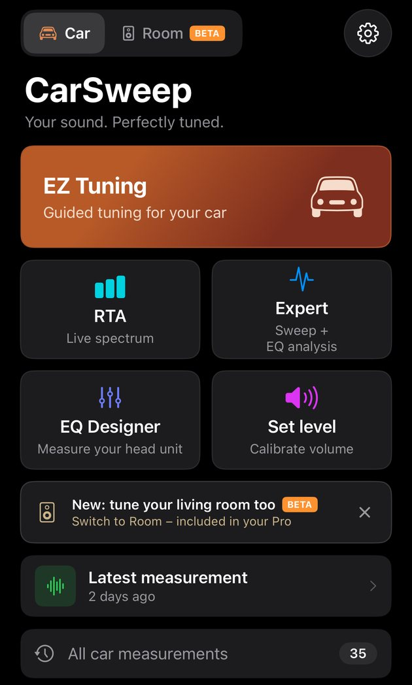
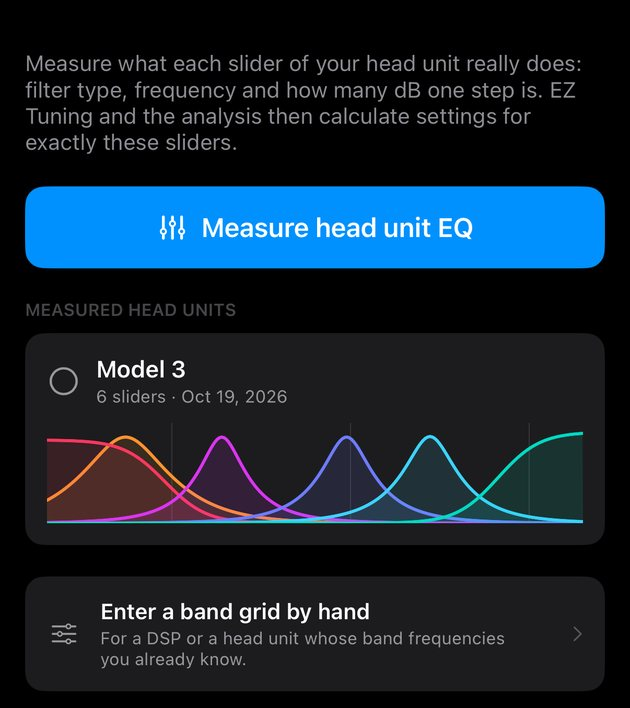
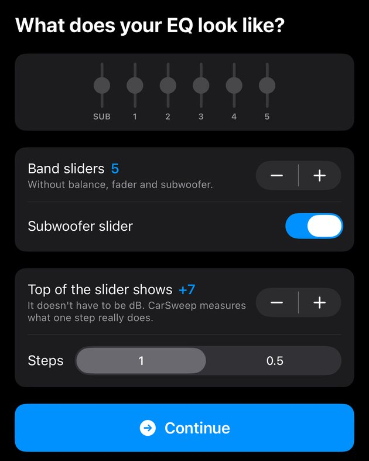
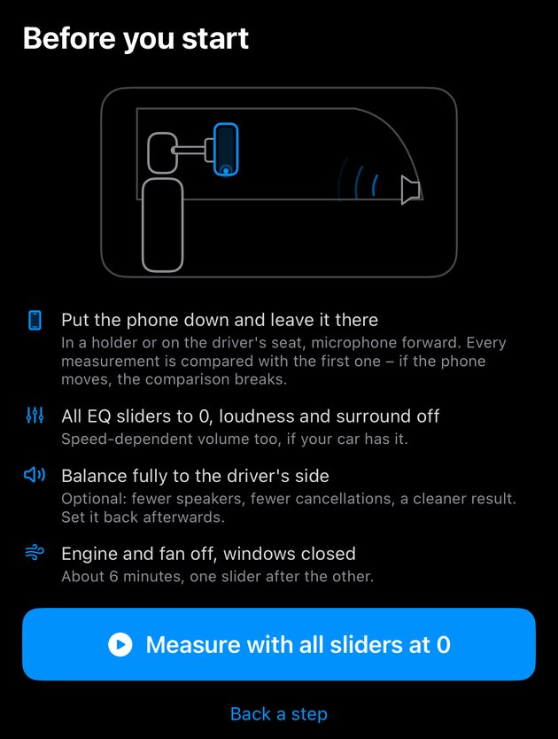
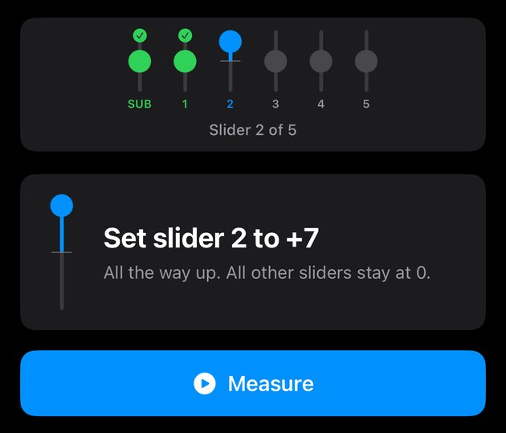
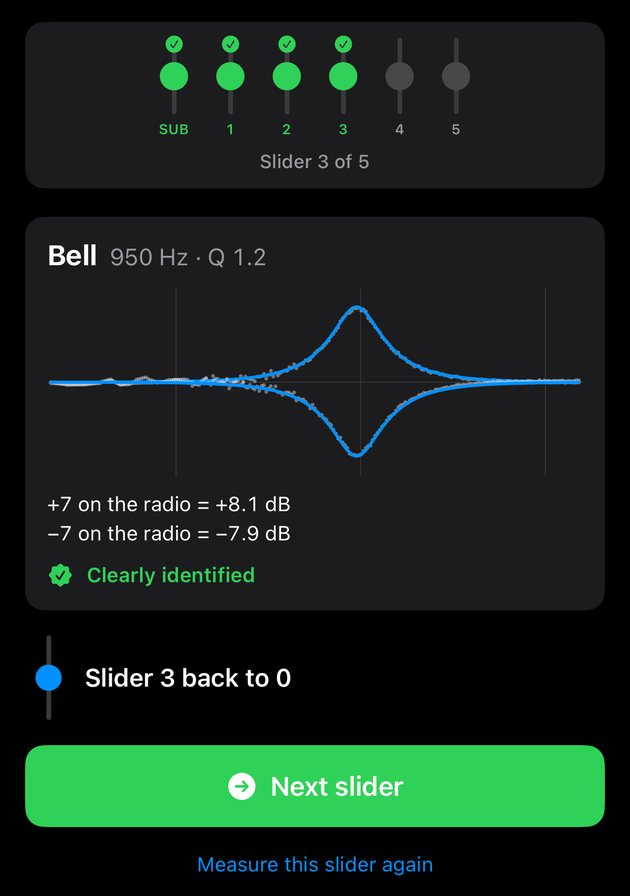
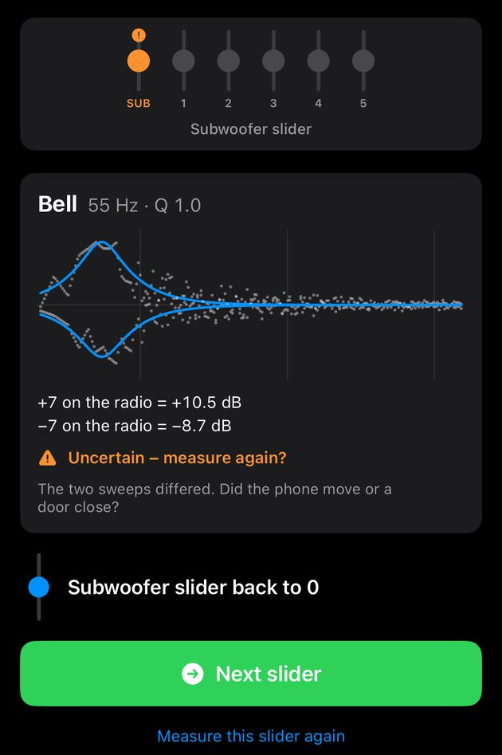
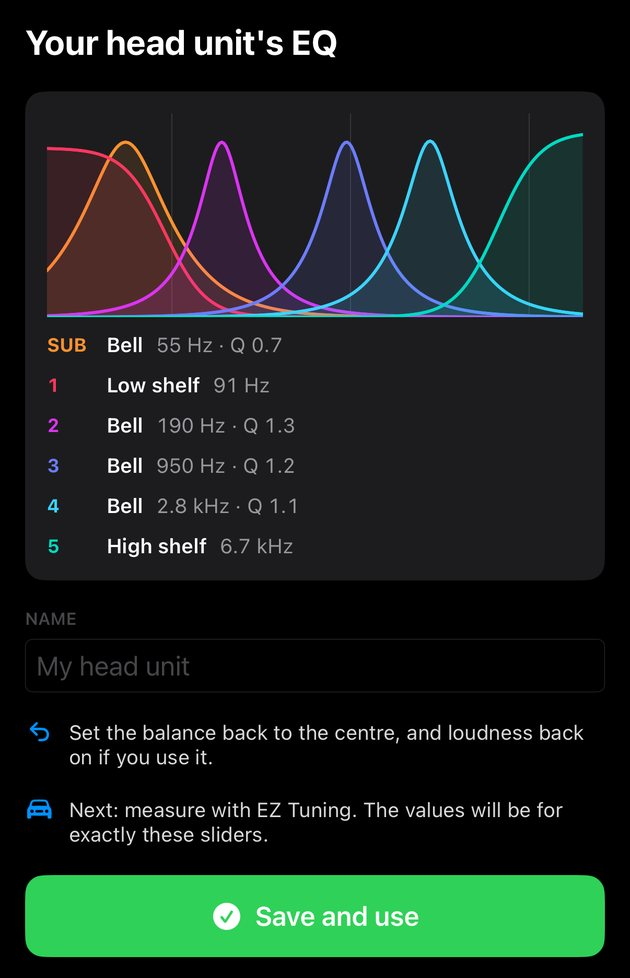
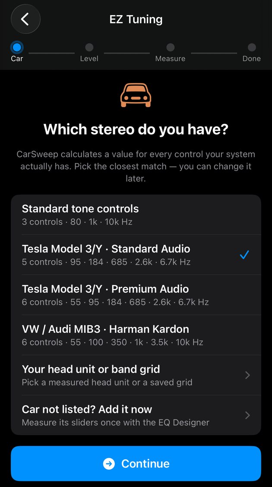

Guides › EQ Designer
EQ Designer: teach CarSweep your head unit's EQ PRO
Every head unit labels its equalizer differently: five sliders without frequencies, a “+7” that isn't 7 dB, a separate subwoofer slider. The EQ Designer measures what each slider really does – filter type, frequency, width and how many dB one step is. After that, EZ Tuning and the analysis give you values for exactly your sliders, in your head unit's own steps.
What you need
- CarSweep Pro. The EQ Designer is on the iPhone for now.
- Your phone connected to the car via Bluetooth audio, not CarPlay.
- A place where the phone can lie still: a phone holder or the driver's seat. The phone's own microphone is fine.
- About ten minutes in the parked car, engine off, doors closed.
How it works: CarSweep measures once with all sliders at 0 – the reference – and then every slider at its maximum and at its minimum. The difference to the reference is that slider's filter. Because only differences count, the car, the speakers and the microphone cancel out: the phone doesn't need to be at your head, it just must not move.

Step 1
Open the EQ Designer
- 1EQ Designer – on the start screen, in Car mode.
You can also get here from EZ Tuning: if your car isn't in the list, tap Car not listed? Add it now.

Step 2
Start a new measurement
- 1Measure head unit EQ – starts the guided measurement.
- 2Measured head units – everything you've measured so far, with the filter of every slider. Tap one to use it.
- 3Enter a band grid by hand – if you already know your EQ's frequencies (a DSP, or a head unit with labelled bands), you can type them in instead of measuring.

Step 3
Describe your EQ
Look at the equalizer screen in your car and copy what you see.
- 1Preview – the slider bank as CarSweep will measure it. It should look like your car's screen.
- 2Band sliders – how many EQ sliders there are, without balance, fader and subwoofer.
- 3Subwoofer slider – switch it on if there's a separate subwoofer level. It is always measured first.
- 4Top of the slider shows – the number at the top end of a slider, e.g. 7 for −7 … +7. It doesn't have to be dB; CarSweep measures what one step really does.
- 5Steps – how far one click moves the slider: 1 or 0.5.
- 6Continue.

Step 4
Prepare and measure the reference
- 1Phone position – in a holder or on the driver's seat, microphone facing forward.
- 2Put the phone down and leave it there – every measurement is compared with the first one. If the phone moves, the comparison breaks.
- 3All EQ sliders to 0, loudness and surround off – and speed-dependent volume, if your car has it.
- 4Balance fully to the driver's side – optional. Fewer speakers mean fewer cancellations and a cleaner result. Set it back afterwards.
- 5Engine and fan off, windows closed.
- 6Measure with all sliders at 0 – the reference. CarSweep plays two sweeps; if they differ too much (door closed, someone moved), it asks you to measure the reference again.

Step 5
Measure each slider
Now one slider after the other, each twice: all the way up, then all the way down.
- 1Progress – green is done, blue is the current slider, orange means uncertain. SUB is the subwoofer slider, the numbers are your band sliders counted from the left.
- 2What to do – e.g. “Set slider 2 to +7”: move only this slider all the way up. All other sliders stay at 0. Next time it says “−7”: all the way down.
- 3Measure – two sweeps for this position. Don't touch the phone.

Step 6
Check each result
After both positions CarSweep shows what it found for this slider.
- 1Progress – the slider turns green.
- 2Filter – the type (Bell for a peak in the middle, Low shelf for bass, High shelf for treble), its frequency and its width (Q). The plot shows the measured change at maximum and minimum (dots) and the filter that fits it (line).
- 3Steps in dB – what the end positions really do, e.g. “+7 on the radio = +8.1 dB”.
- 4Clearly identified – the filter matches the measurement well.
- 5Back to 0 – set this slider back to 0 before you continue.
- 6Next slider – after the last slider this button reads Show result.
- 7Measure this slider again – if something went wrong during the sweeps.

Step 7
When a slider is uncertain
- 1Orange – this slider wasn't measured cleanly.
- 2Uncertain – measure again? – with the reason underneath. Most often the two sweeps differed: the phone moved, a door closed, the fan came on.
- 3Measure this slider again – repeats only this slider. You can also continue and remeasure it later from the result.
“No measurable effect” means the slider changes nothing the microphone can hear – typically a very high band. It stays in the bank without a value, so the layout still matches your car.

Step 8
Save your head unit
- 1All sliders at a glance – every filter in one plot, one colour per slider.
- 2The list – type, frequency and Q of every slider. Sliders marked orange were uncertain: tap one to measure only that slider again.
- 3Name – e.g. the car, so you find it again.
- 4Reminder – set the balance back to the centre and loudness back on, if you use it.
- 5Save and use – stores the head unit and selects it for your car.

Step 9
Use it with EZ Tuning
Now measure your car as usual: EZ Tuning on the start screen → choose your stereo → set the level → one sweep. The result shows a value for every slider you measured, in your head unit's own steps.
- 1Your head unit or band grid – your measured head unit is here (and already selected after saving). Tap to switch between several.
- 2Car not listed? Add it now – starts the EQ Designer from here.
In Expert mode the values for your sliders appear in the card Your car's EQ below the graph.
Questions
- Do I have to hold the phone in front of my face like in EZ Tuning?
- No. The EQ Designer compares measurements with each other, so the position doesn't matter – as long as the phone stays exactly where it is for the whole run.
- My head unit shows +7, but CarSweep says +8.1 dB. Which is right?
- Both. +7 is what the screen shows, +8.1 dB is what the slider really does. CarSweep remembers this and gives you recommendations in your head unit's own steps.
- Do I need to do this again?
- Once per car is enough. Repeat single sliders only if they came out orange.
- My car is already in the list (Tesla, VW/Audi). Do I need the EQ Designer?
- No – pick your car and start EZ Tuning. The EQ Designer is for every head unit CarSweep doesn't know yet.
- Can I measure single speakers with it?
- No. It measures what the equalizer does to the whole system. The optional balance setting only reduces cancellations during the measurement.
Questions or a head unit that doesn't work? Write to help@carsweep.app – a screenshot of the result helps.